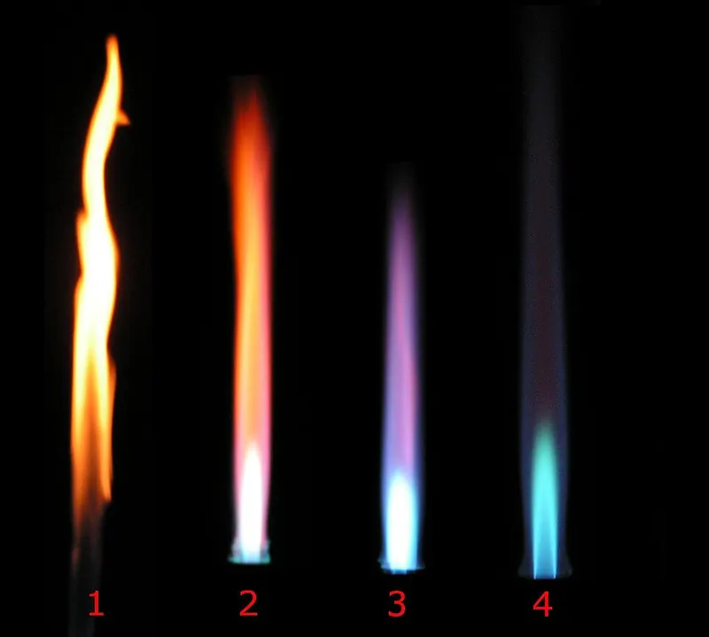
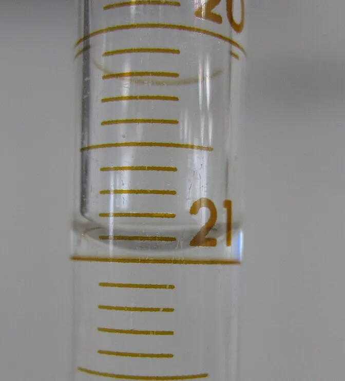

Cambridge Lower Secondary · Science 0893 · Stage 8 · Start here
Thinking and Working Scientifically: Models, Investigations and Analysing Results
Every Stage 8 science skill — analogies and formulae, hypotheses, planning, risk, keys, accurate measuring, tables, graphs, anomalies, conclusions and evaluation — with one investigation followed from start to finish.
British & IGCSE › Checkpoint 8 › Checkpoint 8 Science — Complete Course
- Describe what an analogy is, use one as a model, and use symbols and formulae (8TWSm.01, 8TWSm.02, 8TWSm.03)
- Decide if a hypothesis is testable, and how evidence supports or contradicts it (8TWSp.01, 8TWSp.02)
- Make predictions using scientific knowledge (8TWSp.03)
- Plan different types of investigation, with variables, knowing that not all investigations can be fair tests (8TWSp.04)
- Make risk assessments and work safely (8TWSp.05, 8TWSc.05)
- Sort, group and classify, including making and using keys (8TWSc.01)
- Choose and use equipment; take accurate and precise measurements and explain why they matter (8TWSc.02, 8TWSc.04)
- Decide if measurements have been repeated enough to be reliable (8TWSc.03)
- Judge secondary sources for relevance and bias (8TWSc.06)
- Collect and record enough results in a suitable form (8TWSc.07)
- Say how accurate a prediction was; describe trends and anomalous results; make conclusions and state their limitations; evaluate and suggest improvements (8TWSa.01, 8TWSa.02, 8TWSa.03, 8TWSa.04)
- Present and interpret observations and measurements (8TWSa.05)
Thinking and Working Scientifically (TWS) is how scientists ask questions, plan, measure, and decide what their results mean. In tests it is mixed into almost every question, so these skills earn marks in biology, chemistry, physics, and Earth and space. On this page one investigation — how the number of coils changes the strength of an electromagnet — runs through most of the sections, so you can see every step of real science.
| Word / phrase | Meaning / use |
|---|---|
| analogy | تشبيه — comparing something new with something familiar that works in a similar way |
| model | نموذج — a simple way of showing or explaining a scientific idea |
| hypothesis | فرضية — an idea that explains something and can be tested |
| prediction | توقّع — what you think will happen, with a scientific reason |
| independent variable | المتغيّر المستقل — the one you change |
| dependent variable | المتغيّر التابع — the one you measure |
| control variable | المتغيّر الثابت (الضابط) — one you keep the same |
| hazard / risk | مصدر خطر / احتمال حدوث الضرر |
| accurate | دقيق (قريب من القيمة الحقيقية) — close to the true value |
| precise | مضبوط / متقارب — repeated values close together; fine scale divisions |
| reliable | موثوق — you get similar results when you repeat |
| anomalous result | نتيجة شاذة — a result that does not fit the pattern |
| bias | تحيّز — information that favours one side |
| evaluate | يقيّم — judge the method and suggest improvements |
1. Models: analogies, symbols and formulae
An analogy is a comparison between something new and difficult and something familiar that works in a similar way. Scientists use analogies as models: they help us understand, explain and even predict. But an analogy is never exactly the same as the real thing, so every analogy has limitations (ways it does not match).
| Real thing | Analogy | How it helps | Limitation |
|---|---|---|---|
| The heart | a pump | Shows that the heart pushes blood round the body. | The heart is a living muscle that beats by itself. |
| Electric current in a circuit | water flowing in pipes, pushed by a pump | Cell = pump, wires = pipes, current = flow of water; a narrow pipe is like a resistance. | Water spills from a broken pipe; current does not pour out of a cut wire. |
| The atom (Rutherford model) | a tiny solar system | A small, heavy centre (nucleus) with electrons around it, like planets round the Sun. | Electrons are held by electric attraction, not gravity; most of the atom is empty space. |
| Antagonistic muscles | two people pulling a door with ropes from opposite sides | Each one can only pull, so you need one on each side to open and to close it. | Muscles are joined to bones by tendons and change shape when they contract. |
Using an analogy for a purpose (8TWSm.02): choose the part of the analogy that matches the question. For example: "Use the pipe analogy to explain why adding a second cell makes a bigger current." → A second pump pushes the water harder, so more water flows each second; in the same way two cells push a bigger current round the circuit.
Symbols and formulae (8TWSm.03) are another kind of model: short, exact ways to write scientific ideas that everyone in the world understands.
| Type | Examples you will use in Stage 8 |
|---|---|
| Chemical symbols and formulae | O2 (oxygen), CO2 (carbon dioxide), H2O (water), Fe (iron), Mg (magnesium), NaCl (sodium chloride) |
| Word equations | glucose + oxygen → carbon dioxide + water |
| Formulae (equations) | speed = distance ÷ time; pressure = force ÷ area; moment = force × distance |
| Units and their symbols | m (metre), s (second), m/s (metres per second), N (newton), cm³ (cubic centimetre), °C, g, kg |
| Diagram symbols | circuit symbols for a cell, lamp, switch; arrows for forces and for rays of light |
2. Hypotheses and predictions
A hypothesis is a scientific idea that explains something, for example: "An electromagnet with more coils of wire is stronger, because more turns of current make a stronger magnetic field." A prediction says what you expect to happen in your investigation, and why, using science you know: "I predict that if I double the number of coils, the electromagnet will pick up about twice as many paperclips, because…"
Is it testable? (8TWSp.01) A hypothesis is testable only if you can collect evidence about it by observing or measuring. Opinions (best, prettiest, nicest, more fun) and ideas about things that cannot be measured are not testable.
| Hypothesis | Testable? | Why |
|---|---|---|
| Plants grow taller in more light. | Yes | You can change the light and measure the height. |
| Iron rusts faster in salty water. | Yes | You can compare the rust on nails in salty and in pure water. |
| Gold is the most beautiful metal. | No | "Beautiful" is an opinion; it cannot be measured. |
| People will live on Mars in the year 3000. | No | We cannot collect evidence now. |
Evidence supports or contradicts (8TWSp.02). If the results match the prediction, the evidence supports the hypothesis. If they do not, the evidence contradicts it, and the hypothesis may need to change. One investigation never proves a hypothesis for ever: other scientists repeat the work, and new evidence can still change our ideas.
3. Planning investigations
In a fair test you change one variable, measure one variable and keep all the others the same.
| Variable | Meaning | Electromagnet example |
|---|---|---|
| Independent | The one you change on purpose | number of coils of wire (10, 20, 30, 40, 50, 60) |
| Dependent | The one you measure | number of paperclips picked up |
| Control | Ones you keep the same, so the test is fair | same iron nail (core), same wire, same battery/voltage, same size of paperclips |
Not all investigations can be fair tests (8TWSp.04). Scientists choose the type of enquiry that fits the question:
| Type of investigation | When it is used | Example |
|---|---|---|
| Fair test | You can change one variable and control the rest. | Does the number of coils affect the strength of an electromagnet? |
| Pattern seeking | You cannot control the variables, so you collect lots of data and look for a pattern. | Do people who smoke have more breathing problems? |
| Observing over time | You watch how something changes. | How does the Moon's shape change over a month? |
| Identifying and classifying | You sort things into groups or name them. | Using a key to identify invertebrates in a pond. |
| Research using secondary sources | The investigation is too big, slow or dangerous to do yourself. | How has the Earth's climate changed over 800 000 years? |
| Using models | The real thing is too small, big or far away. | Using a ball-and-string model to explain how a hinge joint moves. |
Choosing equipment (8TWSc.02). Choose an instrument that measures the right quantity, with a suitable range (big enough) and fine enough scale divisions.
| Quantity | Instrument | Unit |
|---|---|---|
| Volume of a liquid | measuring cylinder (small volumes: syringe or pipette) | cm³ |
| Mass | balance (scales) | g or kg |
| Temperature | thermometer | °C |
| Time | stopwatch / stop clock | s |
| Length or distance | ruler, metre rule, tape measure | mm, cm, m |
| Force or weight | newton meter (force meter) | N |
| Volume of a gas | gas syringe, or upturned measuring cylinder in water | cm³ |
4. Risk assessments and working safely
A hazard is something that could cause harm (acid, a flame, hot water). The risk is the chance that harm happens. A risk assessment lists the hazards and how you will control (reduce) the risk. Then you follow it while you work (8TWSp.05, 8TWSc.05).
| Hazard | Possible harm | Control |
|---|---|---|
| Wire of an electromagnet gets hot | burn to fingers | use a low voltage; switch off between readings; do not hold the coil |
| Dilute acid | stings skin; damages eyes | wear eye protection (goggles); wipe up spills; wash skin with water |
| Bunsen burner flame | burns; hair or paper catches fire | tie back hair; heatproof mat; keep paper away; use the safety (yellow) flame when not heating |
| Hot water / hot glass | scalds and burns | let it cool; use tongs; stand up while heating |
| Broken glass | cuts | tell the teacher; do not pick up with fingers |

5. Sorting, classifying and keys
Scientists sort and classify objects, materials and living things by testing (is it magnetic? does it conduct electricity?), by observation (number of legs, leaf shape), by secondary information (books, databases) and by using keys (8TWSc.01). A dichotomous key asks one question at a time with two possible answers (yes/no), until only one thing is left.
Using the key: a leaf is not divided into leaflets and has smooth edges: no → no → B. A leaf has 7 leaflets: yes → yes → C. Making a key: choose features you can see clearly and that split the group into two ("Has it got legs?"), never opinions ("Is it big?" — big compared with what?).
6. Accuracy, precision and repeating measurements
Accurate measurements are close to the true value. Precise measurements are close to each other when you repeat them; a precise instrument has small scale divisions (a thermometer marked every 0.5 °C is more precise than one marked every 2 °C). Accuracy and precision matter because conclusions are only as good as the measurements they are based on (8TWSc.04).
How to measure accurately: read scales at eye level; read a liquid at the bottom of the meniscus; check the balance reads zero before you start; choose an instrument with a suitable scale; start the stopwatch and stop it at exactly the right moments.

Repeating (8TWSc.03). Repeat each measurement (often three times) and calculate a mean. Repeats let you spot anomalous results. Your readings are repeated sufficiently (enough) if the repeats are close together. If they are spread out, do more repeats.
Secondary sources (8TWSc.06). Information from books, websites, adverts and other people's results must be checked. Is it relevant (about exactly your question)? Is it from a reliable source (scientists, a university, an official organisation)? Could it be biased — written by someone who gains from you believing it, such as a company selling a product? Compare several sources.
7. Recording results
Collect enough results (at least five different values of the independent variable, with repeats) and record them in a table as you go (8TWSc.07). Rules: independent variable in the first column; dependent variable in the next columns; units in the headings, not in every box; same number of decimal places in a column.
| Number of coils | Paperclips: trial 1 | Trial 2 | Trial 3 | Mean |
|---|---|---|---|---|
| 10 | 3 | 3 | 3 | 3 |
| 20 | 6 | 5 | 7 | 6 |
| 30 | 9 | 10 | 8 | 9 |
| 40 | 12 | 7 | 12 | 12 |
| 50 | 15 | 14 | 16 | 15 |
| 60 | 18 | 19 | 17 | 18 |
In the row for 40 coils, trial 2 (7) is far from the other two (12 and 12): it is anomalous, so it is left out of the mean. Mean = (12 + 12) ÷ 2 = 12. A possible cause: some paperclips fell off, or the current was not switched on fully.
8. Presenting results: bar chart or line graph?
| Use a… | When the independent variable is… | Example |
|---|---|---|
| bar chart | categoric — names or groups (types of metal, kinds of food) | volume of gas made by different metals in acid |
| line graph | continuous — numbers that can take any value (time, temperature, length, number of coils) | paperclips picked up for different numbers of coils |
- Put the independent variable on the x-axis (across) and the dependent variable on the y-axis (up).
- Label both axes with the quantity and unit.
- Choose an even scale (1, 2, 5 or 10 per square) that uses more than half of the grid.
- Plot each point as a small cross (×) exactly.
- Draw a line of best fit (straight or a smooth curve) with roughly equal numbers of points above and below it. Ignore anomalous points when drawing it. Do not join dot to dot.
9. Trends, anomalies, conclusions and evaluation
Describe the trend (8TWSa.02): use the sentence "As the [independent variable] increases, the [dependent variable] increases / decreases", then add numbers. From the graph: "As the number of coils increases from 10 to 60, the number of paperclips increases from 3 to 18. The paperclips increase by 3 for every 10 extra coils (a straight line through the origin)." The point at 40 coils (8 paperclips) is anomalous: it is well below the line.
Was the prediction accurate? (8TWSa.01) Compare the prediction with the results and give a reason. "I predicted that doubling the coils would double the paperclips. My prediction was accurate: 20 coils picked up 6 paperclips and 40 coils picked up 12 (mean values)." If a prediction was not accurate, suggest why — perhaps your scientific idea was incomplete, or there was an error in the measurements.
Conclusion and its limitations (8TWSa.03): a conclusion says what the results show, using the evidence: "The more coils, the stronger the electromagnet." Limitations are the limits of what you can claim: it was only tested from 10 to 60 coils, with one type of nail and one battery; paperclips only measure strength roughly (you cannot pick up half a paperclip).
Evaluate and improve (8TWSa.04): say what went well or badly in the method and suggest a change with a reason. Example: "Use smaller paperclips or measure the force with a newton meter, so the strength can be measured more precisely." "Repeat each reading three times and calculate a mean, so anomalous results can be spotted and the results are more reliable." "Use a variable resistor and ammeter to keep the current the same, so that it is a fair test."
المتغيّر المستقل = اللي إنت بتغيّره بإيدك. المتغيّر التابع = اللي بتقيسه. المتغيّرات الثابتة = كل حاجة تانية لازم تفضل زي ما هي عشان التجربة تبقى عادلة (fair test). ولو فيه نتيجة بعيدة عن الباقي (anomalous) متدخلهاش في حساب المتوسط.
Worked examples
Worked example 1 — using an analogy A teacher says: "An electric circuit is like water flowing round a loop of pipes, pushed by a pump." (a) What is an analogy? [1] (b) In this analogy, what does the pump represent? [1] (c) Give one limitation of this analogy. [1]
- (a) A comparison with something familiar that works in a similar way, used to help explain a scientific idea.
- (b) The cell (or battery) — it pushes the current round, as the pump pushes the water.
- (c) If a pipe breaks, water pours out, but if a wire is cut the electric current does not flow out — it just stops. (Accept other sensible differences.)
Common mistake: in (c), saying what is the same. A limitation is a way the analogy is different from the real thing.
Worked example 2 — testable hypotheses and evidence Omar's hypothesis: "Seeds germinate faster when they are warmer." (a) Is this hypothesis testable? Explain your answer. [1] (b) Seeds at 25 °C germinated in 3 days; seeds at 10 °C took 8 days. Does this evidence support or contradict the hypothesis? [1]
- (a) Yes: he can change the temperature and measure the time the seeds take to germinate.
- (b) It supports the hypothesis: the warmer seeds germinated faster (3 days compared with 8 days).
- Note: say "supports", not "proves". More tests, at more temperatures and with more seeds, would make the evidence stronger.
Worked example 3 — planning Laila investigates how the number of coils affects the strength of an electromagnet. (a) Name the independent and dependent variables. [2] (b) Name two control variables. [2] (c) Write a prediction and give a scientific reason. [2]
- (a) Independent: the number of coils [1]. Dependent: the number of paperclips picked up [1].
- (b) Any two: the same nail (core); the same battery / voltage / current; the same type and size of paperclips; the same wire [2].
- (c) Prediction: more coils will pick up more paperclips [1]. Reason: more turns of wire carrying current make a stronger magnetic field [1].
Common mistake: a prediction with no reason ("It will pick up more") scores only 1 of the 2 marks.
Worked example 4 — repeats, means and anomalies Use the results table in section 7. (a) Which result is anomalous? [1] (b) Calculate the mean for 20 coils. [1] (c) Have the readings been repeated enough? Explain. [1]
- (a) 40 coils, trial 2 (7 paperclips) — far below 12 and 12.
- (b) (6 + 5 + 7) ÷ 3 = 18 ÷ 3 = 6 paperclips.
- (c) Yes: for each number of coils the three repeats are close together (within 1 or 2 paperclips), apart from one anomaly, which was easy to spot.
Worked example 5 — graphs and conclusions Use Laila's graph. (a) Describe the trend. [2] (b) Use the line of best fit to predict the number of paperclips for 35 coils. [1] (c) State one limitation of her conclusion. [1]
- (a) As the number of coils increases, the number of paperclips increases [1]; from 3 paperclips at 10 coils to 18 at 60 coils / it goes up in proportion (doubling the coils doubles the paperclips) [1].
- (b) Go up from 35 on the x-axis to the line, then across: 0.3 × 35 = 10.5, so about 10 or 11 paperclips (you cannot pick up half a paperclip).
- (c) It was only tested between 10 and 60 coils / with one size of nail / with one battery, so we do not know what happens outside these conditions.
Worked example 6 — choosing equipment and improving accuracy Adam needs to measure 8 cm³ of water. He can choose a 10 cm³, a 100 cm³ or a 1000 cm³ measuring cylinder. (a) Which should he choose? Explain. [2] (b) Suggest how he should read the scale. [1]
- (a) The 10 cm³ cylinder [1]: it has smaller scale divisions (e.g. 0.2 cm³), so the measurement is more precise/accurate; a large cylinder has big divisions and 8 cm³ would only fill the bottom [1].
- (b) With his eye level with the bottom of the meniscus, on a flat surface.
- Mixing up independent (changed) and dependent (measured) variables. Ask: "Which one did they choose before starting?"
- Control variables written as "the amount" — name the quantity: "the volume of acid", "the mass of the magnesium".
- Joining dot to dot on a line graph, or drawing a line of best fit through the anomalous point.
- Including an anomalous result in the mean.
- Saying results "prove" a hypothesis. Evidence supports or contradicts it.
- Describing a trend with no numbers, or a prediction with no reason.
- Using a bar chart for continuous data such as temperature or time.
- Saying "repeat it to make it a fair test". Repeats make results more reliable; controlling variables makes it fair.
- "Name the independent variable / two variables that should be kept the same." [1] each — be specific.
- "Which result is anomalous? Suggest a reason." Find the value that breaks the pattern; give a real experimental cause.
- "Calculate the mean." Leave out the anomaly; show the sum and the division.
- "Plot the results and draw a line of best fit." Plot crosses exactly; smooth line; ignore anomalies.
- "Describe the pattern." As … increases, … increases/decreases + numbers.
- "Was the prediction correct? Use the results." Yes/no + data from the table.
- "Suggest one improvement and explain why." Change + reason (more accurate / more reliable / fairer).
- "Which source is most reliable?" Think: who wrote it, and do they gain from it?
accurate يعني قريب من القيمة الحقيقية، و precise يعني القراءات المتكررة قريبة من بعض. بنكرر التجربة ٣ مرات ونحسب المتوسط عشان النتائج تبقى موثوقة (reliable). التكرار مش بيخلي التجربة عادلة — اللي بيخليها عادلة هو تثبيت المتغيرات.
Practice
- An analogy compares a new idea with something familiar; always know one limitation.
- Independent = changed, dependent = measured, control = kept the same. Not every investigation can be a fair test.
- Accurate = close to the true value; precise = repeats close together. Repeat, leave out anomalies, calculate the mean.
- Bar chart for categories; line graph for continuous data, with a line of best fit.
- Describe trends with numbers; conclusions need evidence and limitations; improvements need a reason.
All pages in this course
Start here
- Stage 8 Science: The Tests and How to Prepare
- Thinking and Working Scientifically: Models, Investigations and Analysing Results
Biology
- Joints and Antagonistic Muscles
- Blood and Its Components
- Breathing, Gas Exchange and Diffusion in the Lungs
- A Balanced Diet, Energy Stores and Lifestyle
- Aerobic Respiration
- Ecosystems, Bioaccumulation and Invasive Species
Chemistry
- The Structure of the Atom
- Purity, Concentration and Chromatography
- Word Equations, Exothermic and Endothermic Reactions
- The Reactivity of Metals
- Impure Products and Solubility of Salts
Physics
- Speed and Distance–Time Graphs
- Balanced and Unbalanced Forces, and Moments
- Pressure, Particles and Diffusion
- Reflection and Refraction
- Dispersion and Colour
- Magnetic Fields and Electromagnets
Earth and space
- The Earth's Magnetic Field and Earth's Resources
- Climate, Weather and Climate Change
- Galaxies and Asteroids
Practice tests